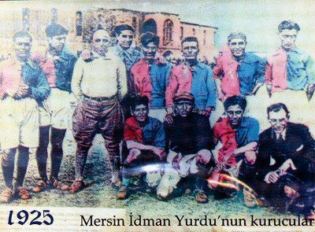
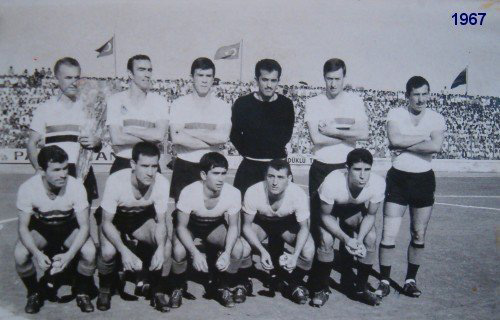
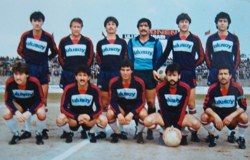

1925
KIRMIZI ŞEYTANLAR!
90 DAKİKALIK DEĞİL, 95 YILLIK SEVDA!
MERSİN İDMAN YURDU KULÜP TARİHİ Kuruluşundan itibaren 1949 yılına kadar bölge birinciliğini kimseye kaptırmayan Mersin İdmanyurdu, 1944 yılında Ankara'da yapılan Türkiye Şampiyonası'nda üçüncü olma başarısı göstermiştir. 1963-64 sezonunda şampiyon olarak 2. Lig'e çıkan Mersin İdmanyurdu, 2. Lig'deki üçüncü senesinde profesyonel bir kadro oluşturarak şampiyon olmuş ve de ilk defa o yıl (1966–67) Lefter Küçükandonyadis öncülüğünde Türkiye 1. Ligi'ne çıkmıştır.Kulüp, tarihinin ilk anlamlı kupası olan Başbakanlık Kupası'nı da aynı yıl Amatör Küme şampiyonu olan İzmir Denizgücü'nü 2–0 yenerek dönemin başbakanı Bülent Ecevit'ten almıştır. 1967 yılından itibaren aralıksız 7 yıl süreyle 1. Lig'de oynayan Mersin İdmanyurdu'nun bu dönemdeki en büyük başarısı 1969-70 sezonunu evinde oynadığı maçlarda mağlubiyet yüzü görmeden ligi 4. sırada bitirmesidir. Takım 1973-74 sezonunda 2. Lig'e düşmüş, 1975-76 sezonunda ise tekrar yükseldiği 1. Lig'de toplam 11 sezon boyunca mücadele etmiştir. Mersin İdmanyurdu, 1982-83 sezonunda evinde oynadığı 17 maç da kalesinde sadece 1 gol görerek bir sezonda kendi evinde en az gol yiyen takım olmuştur.Kulübün tarihindeki en büyük başarılarından biri de Türkiye'yi Kupa Galipleri Kupası'nda temsil etmiş olmasıdır. 1982-83 yılında Türkiye Kupası finalde Fenerbahçe'ye elenerek kupayı alamamasına rağmen, Fenerbahçe'nin aynı yıl şampiyon olması ile Avrupa kupalarında mücadele hakkı kazanmıştır. Eleme maçında Spartak Varna takımına Mersin'de 0-0 ve deplasmanda 0-1'lik skorlarla elenen Mersin İdmanyurdu, o tarihten sonra düştüğü 2. Lig'den tam 29 sene sonra Bank Asya 1.Liginin 2010-2011 sezonunu şampiyon bitirerek yeniden adını Süper Lige yazdırmıştır. Takım 2012-2013 sezonunu Süper Lig'in son sırasında tamamlayarak PTT 1. Lig'e düşmüştür. Kırmızı - Lacivertli ekip Süper Lig'den düştükten sadece bir yıl sonra Hakan Kutlu yönetiminde Play-Off Şampiyonu olarak yeniden Süper Lig'deki yerini almayı başardı. |